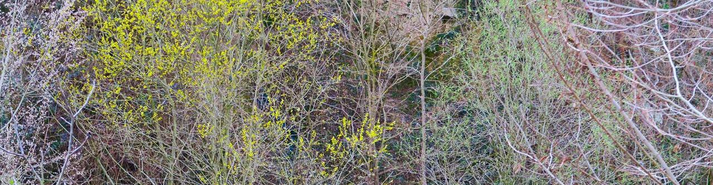

Ruta · Sant Joan
En aquest tomb familiar al voltant del poble resseguirem el tram final de la riera d'Arçamala, vora el riu Ter, i després remuntarem el torrent de la Font de la Puda. Amb l'aigua com a fil…